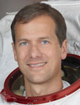

Lyndon B. Johnson Space Center
Houston, Texas 77058
|
National Aeronautics and Space Administration Lyndon B. Johnson Space Center Houston, Texas 77058 |
 |
Biographical Data |
||
Thomas H. Marshburn, M.D.
NASA Astronaut
PERSONAL DATA: Born August 29, 1960, in Statesville, North Carolina. Married to the former Ann M. Sanders. They have one daughter. Tom has private, instrument, aerobatic, and commercial pilot licenses. He enjoys backpacking and mountain climbing, and in 1980, he backpacked from Canada to Mexico along the Pacific Crest Trail. Tom also enjoys family activities, swimming, scuba diving, snowboarding, playing guitar, and reading.
EDUCATION: Graduated from Henderson High School, Atlanta, Georgia, in 1978; received a Bachelor of Science degree in Physics from Davidson College, North Carolina, in 1982; a Masters in Engineering Physics from the University of Virginia in 1984; a Doctorate of Medicine degree from Wake Forest University in 1989; and a Masters in Medical Science from the University of Texas Medical Branch (UTMB) in 1997.
ORGANIZATIONS: Aerospace Medical Association; American Academy of Emergency Medicine; Aircraft Owners and Pilot’s Association.
SPECIAL HONORS: NASA Superior Achievement Award, 1998. Space and Life Sciences Division Special Space Flight Achievement Award, 2003 and 2004. Lyndon B. Johnson Space Center Superior Achievement Award, January 2004.
EXPERIENCE: After completing medical school, Dr. Marshburn trained in emergency medicine at the St. Vincent Hospital Emergency Medicine program in Toledo, Ohio, where he also worked as a LifeFlight physician. In 1992, after three years of training, he was certified by the American Board of Emergency Medicine. He then worked as an emergency physician in Seattle, Washington, before being accepted into the first class of the NASA/UTMB Space Medicine Fellowship in Galveston, Texas. After completing the fellowship in 1995, he worked as an emergency physician in area hospitals in Houston, Texas, and at the Massachusetts General Hospital in Boston, Massachusetts. During this time he also worked as an attending physician for the emergency medicine residency at the University of Texas in Houston.
NASA EXPERIENCE: Dr. Marshburn came to Houston’s Johnson Space Center in November 1994 as a flight surgeon, assigned to Space Shuttle Medical Operations and to the joint US/Russian Space Program. From February 1996 to May 1997 he served as a flight surgeon for NASA personnel deployed to the Cosmonaut Training Center, Star City, Russia, followed by work in the Center for Flight Control in Korolev, Russia, in support of the NASA 4 Expedition to the Mir Space Station. From July 1997 to August 1998 he was co-chair of Medical Operations for the Shuttle/Mir Space Program. From 1998 to 2000, he was deputy Flight Surgeon for Neuronal (STS-98) and lead Flight Surgeon for the STS-101 mission to the International Space Station.
After spending 10 months as a NASA Representative to the Harvard/MIT Smart Medical Systems Team of the National Space Biomedical Research Institute in Boston, Massachusetts, he worked as the lead Flight Surgeon for Expedition 7 to the ISS in 2003, supporting from Russia, Kazakhstan, and Houston. Until he was selected as an astronaut candidate, Dr. Marshburn served as Medical Operations Lead for the space station. Activities included development of the biomedical training program for flight surgeons and astronaut crew medical officers, and managing the station’s Health Maintenance System.
Selected by NASA in May 2004, Dr Marshburn completed astronaut candidate training in February 2006. Training included scientific and technical briefings, intensive instruction in shuttle and International Space Station systems, physiological training, T-38 flight training, and water and wilderness survival training. He was qualified for various technical assignments within the Astronaut Office and future flight assignments as a mission specialist. Dr. Marshburn completed his first spaceflight in July 2009, logging more than 376 hours in space, and 18 hours and 59 minutes of EVA in three spacewalks. He launched to the International Space Station as a flight engineer in December 2012. While onboard the station, he logged more than 146 days in space and 5 hours and 30 minutes of EVA time in an emergency spacewalk to replace a leaking ammonia pump.
SPACE FLIGHT EXPERIENCE: STS-127, International Space Station Assembly Mission 2J/A, Endeavour (July 15 through July 31, 2009) delivered the Japanese-built Exposed Facility (JEM-EF) and the Experiment Logistics Module Exposed Section (ELM-ES) to the space station. The crew completed the construction of the KIBO Japanese Experiment Module, installed scientific experiments on its Exposed Facility and delivered critical spare parts and replacement batteries to the orbital complex, in addition to transferring 24,638 pounds of hardware and 1,225 pounds of water to the station. While the shuttle was docked to the station, the mission featured a record 13 astronauts working aboard the station representing all five International Partners - NASA, the Russian Space Agency, the Canadian Space Agency, the European Space Agency and the Japanese Space Agency (JAXA). Marshburn performed three spacewalks for a total of 18 hours and 59 minutes of EVA. The mission was accomplished in 248 orbits of the Earth, traveling 6,547,853 million miles in 15 days, 16 hours, 44 minutes and 58 seconds.
Expedition 34/35 (December 19, 2012 to May 14, 2013) - Dr. Marshburn launched aboard Soyuz TMA-07M from the Baikonur Cosmodrome in Kazakhstan, along with crewmembers Chris Hadfield of the Canadian Space Agency and Russian Cosmonaut Roman Romanenko. The crew was welcomed aboard the station by Expedition 34 commander Kevin Ford and cosmonauts Evgeny Tarelkin and Oleg Novitskiy, who departed March 15, 2013 and were replaced by Chris Cassidy, Pavel Vinogradov and Alexander Misurkin on March 23. The mission was accomplished in 2,336 orbits of the Earth and traveled almost 62 million miles.